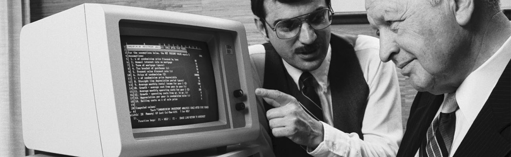

Программирование — это процесс создания программ (программного обеспечения). Для этого программисты пишут исходный код
на одном из языков программирования.
Существует более 300 языков программирования, но для успешной карьеры можно выбирать из десяти самых популярных. Еще
правильнее будет сначала определиться с областью, в которой вы собираетесь работать, и только потом приступать к выбору
языка.
✪ Кто такой программист
Программист – это специалист,
создающий исходный код для программы.
Такой программой может быть операционная
система компьютера, видеоигра,
web или мобильное приложение и
даже алгоритм работы микроволновки.
Программный код пишется на специальном
языке программирования. Он состоит из
обычных слов и некоторых специальных символов.
Сегодня насчитывается несколько сотен
языков программирования, но самые
распространенные из них – Java,
Python, PHP, C#, JavaScript, C, С++,
Objective-C, Swift. Какой язык
программирования выбрать, программист
решает сам в зависимости от конкретной задачи (сделать игру, приложение для web или программу для сервера) и собственных знаний. Квалифицированный программист уверенно использует 2-4 языка.
✪ Появление проффесии
Программирование зародилось в XIX веке, и до середины XX века, когда случился бурный рост информационных технологий,
создание программ для машины было сродни искусству. Программирование было уделом избранных. Сегодня же профессия
программиста распространена и очень востребована. В 2017 году в мире насчитывалось 18.2 млн разработчиков программного
обеспечения, из них 1.3 млн - в России

✪ Требования к данной профессии
Профессия программиста является творческой, несмотря на все мифы о том, что создавать программный код – это скучно.
Область деятельности специалистов весьма обширна: от компаний по созданию компьютерных игр и промышленных организаций,
до ракетостроения и научных институтов.
И вот в чем заключается работа программиста:
1) Составление алгоритмов для решения научно-технических задач.
2) Анализирование уже готовых программ, созданных чужими предприятиями, и определение их эффективности и возможности использования для удовлетворения требований работодателя.
3) Разработка различного рода программ на основе алгоритмов и математических моделей, применяемых для решения технических задач.
4) Унификация и типизация вычислительных процессов.
5) Разработка форм документов, подлежащих машинной обработке.
6) Создание сервисов для автоматического перевода на языки программирования.
7) Разработка макетов и схем ввода, выдачи, обработки и хранения информации.
8) Тестирование и исправление ошибок в разработанных программах.
9) Создание инструкций к программам.
10) Разработка и внедрение методов автоматического решения для типовых, стандартных задач.
11) Участие в проектных работах по расширению области применения вычислительной техники.
12) Разработка и усовершенствование продуктов программирования.
13) Запуск программного обеспечения.
14) Разъяснение простыми словами условий и инструкций по работе с программами обычным пользователям.
15) Создание и внедрение различных системных возможностей для автоматической проверки программ.
И вот в чем заключается работа программиста:
1) Составление алгоритмов для решения научно-технических задач.
2) Анализирование уже готовых программ, созданных чужими предприятиями, и определение их эффективности и возможности использования для удовлетворения требований работодателя.
3) Разработка различного рода программ на основе алгоритмов и математических моделей, применяемых для решения технических задач.
4) Унификация и типизация вычислительных процессов.
5) Разработка форм документов, подлежащих машинной обработке.
6) Создание сервисов для автоматического перевода на языки программирования.
7) Разработка макетов и схем ввода, выдачи, обработки и хранения информации.
8) Тестирование и исправление ошибок в разработанных программах.
9) Создание инструкций к программам.
10) Разработка и внедрение методов автоматического решения для типовых, стандартных задач.
11) Участие в проектных работах по расширению области применения вычислительной техники.
12) Разработка и усовершенствование продуктов программирования.
13) Запуск программного обеспечения.
14) Разъяснение простыми словами условий и инструкций по работе с программами обычным пользователям.
15) Создание и внедрение различных системных возможностей для автоматической проверки программ.
✪ Как стать программистом
Стать программистом легче в юные годы. Но при желании эта профессия доступна в любом возрасте. Для обучения существуют
различные факультеты в вузах и колледжах, бесплатные и платные онлайн-курсы, а также книги для самообразования.
В университетах и других учебных заведениях весьма значительный конкурс по направлениям, которые связаны с
программированием. Поэтому далеко не все работающие программисты имеют диплом. Они заканчивают специальные курсы, читают
книги и на практике знакомятся с профессией.
✪ Где нужен программист
На данный момент программисты крайне востребованы. Такое положение дел останется неизменным еще как минимум 10-15 лет.
Промышленность, бизнес, медицина, наука, транспорт — эти и многие другие отрасли нуждаются в людях, способных работать с
кодами. Такое разнообразие позволяет заниматься наиболее интересным для себя занятием, будь то механика, физика,
биология, маркетинг или даже история.
А если программист совмещает в себе умения разработки ПО и знания узкого профиля, то стоимость его услуг будет заметно
выше.
По этой причине следует определиться с тем, что конкретно из разработки вас привлекает больше всего.
Мобильная разработка — создание приложений для небольших портативных устройств. Речь идет не только о смартфонах и
планшетах, но и о научном оборудовании, носимой электронике, датчиках IoT и т.д. Таким программистам необходимо
постоянно развиваться и обучаться.
Веб-разработка (фронтенд и бэкенд или фуллстек) — создание веб-приложений для различных целей и задач, разработка
сайтов, онлайн-магазинов и т.д. Во Всемирной паутине можно найти любую задачу, так что веб-разработчик всегда найдёт
себе интересное занятие.
Системное программирование — разработка низкоуровневого ПО, взаимодействие с железом. Здесь нужно иметь инженерное
мышление, внимательность, скрупулезность и хорошо знать логику.
Научная работа — область, в которой акцент делается на базовой специальности, а не на самом программировании
(телемедицина, медицинская кибернетика, аналитические системы для химиков и биологов и т.д.). В этой сфере деятельности
вы найдете огромное количество задач, перспектив и возможностей.
Анализ данных, статистика и математика — подходит тем людям, которым нравится исследовать большие данные. Здесь нужны
люди с аналитическим складом ума, способные обнаруживать причинно-следственные связи.
Нейронные сети и компьютерное зрение (распознавание образов и элементов) — перспективная область, для работы в которой
необходимо очень хорошо знать математику. Нейронные сети становятся все более востребованными, так что грамотный
специалист всегда найдет источник заработка.
DevOps/DevSecOps — пойдёт тем, кто заинтересован в системном администрировании и управлении разработкой, но не хочет
заниматься однообразными задачами. При этом по-настоящему хороших «девопсов» крайне мало, так как это довольно сложное
направление.
Прикладная разработка и бизнес ПО — сфера программирования, в которой можно заниматься написанием десктопа на Delphi,
зарабатывать очень большие деньги, понимать COBOL/Java и стать известным специалистом. Данное направление больше
подходит разработчикам, имеющим большой опыт, однако если вам нравится С/С++/Java, то возможно имеет смысл попробовать
себя в этом деле.
✪ Преимущества и недостатки профессии
У этой профессии можно выделить следующие положительные стороны:
1) Востребованность и большое количество вакансий от работодателей.
2) Отсутствие строгого графика. Есть возможность работать как в офисе, так и удаленно.
3) Высокий доход.
4) Разноплановые и интересные задачи, простор для творчества и креатива.
5) Не требуется диплом о высшем образовании, если есть знания и способности к программированию.
Имеются и минусы:
1) Постоянные стрессовые ситуации, авралы.
2) Сидячий образ жизни.
3) Нередко надо объяснять сложные термины простыми словами.
4) Частое устаревание технологий и знаний в связи со стремительным развитием IT-сферы.
1) Востребованность и большое количество вакансий от работодателей.
2) Отсутствие строгого графика. Есть возможность работать как в офисе, так и удаленно.
3) Высокий доход.
4) Разноплановые и интересные задачи, простор для творчества и креатива.
5) Не требуется диплом о высшем образовании, если есть знания и способности к программированию.
Имеются и минусы:
1) Постоянные стрессовые ситуации, авралы.
2) Сидячий образ жизни.
3) Нередко надо объяснять сложные термины простыми словами.
4) Частое устаревание технологий и знаний в связи со стремительным развитием IT-сферы.

✪ Зарплата в профессии
В зависимости от выбранного профиля и уровня квалификации программист может иметь разный уровень заработка. Меньше всего
получают junior-разработчики, которые еще не имеют богатого опыта. Самые большие зарплаты у архитекторов программного
обеспечения и системных менеджеров, отвечающих за качество продукта или даже всего проекта. Таким образом, специалисты
получают от 60 000 рублей в регионах до 1 000 000 в крупных городах.
✪ Перспективы профессии
(востребованность)
(востребованность)
Сейчас отрасль IT в целом и программирование в частности находятся на пике востребованности. Компании конкурируют за
квалифицированных специалистов. В перспективе ближайших 5 лет программистов ждет благополучная жизнь и высокие зарплаты,
потому что молодых кадров станет немного меньше. Придет период демографической ямы из-за низкой рождаемости в начале
90-х гг.
Но рынок IT ждет несколько опасностей. Во-первых, обучение программированию сейчас начинается уже практически с детского
сада. Самые известные обучающие языки — это Scratch от MIT и Blockly от Google. Вероятно, навык программирования будет
настолько же распространен, как знание английского языка, то есть будет входить в "джентльменский набор" при приеме на
работу. А если им владеет почти каждый, то и ценность работы снижается.
Во-вторых, IT-образование сейчас дает почти каждый колледж и вуз. После дефицита рынок может "насытиться"
профессиональными программистами, и их зарплаты упадут.
В-третьих, есть страны, в частности Индия, где IT-образование развивается еще быстрее. И в определенный момент услуги
программирования насытят мировой рынок, как сейчас произошло с товарами, произведенными в Китае. С индийскими
программистами трудно будет конкурировать в цене.
Будущему программисту стоит помнить об этих рисках. Но, как и в любой профессии, настоящий специалист, который любит
свое дело и профессионально развивается, в любые времена будет востребован.
✪ Вот что желательно начинать уже сейчас
✔ Углубленно изучать математику, информатику, русский и английский язык в школе, в колледже и т.п.
✔ Программировать и создавать веб-сайты, небольшие редакторы и полезные утилиты.
✔ Читать новости из сферы IT: на порталах cnews.ru, habrahabr.ru, computerworld.ru, hightech.fm и github.com.
✔ Заниматься в кружках по программированию и школах юного программиста.
✔ Программировать и создавать веб-сайты, небольшие редакторы и полезные утилиты.
✔ Читать новости из сферы IT: на порталах cnews.ru, habrahabr.ru, computerworld.ru, hightech.fm и github.com.
✔ Заниматься в кружках по программированию и школах юного программиста.
Заключение
Ознакомившись с данной литературой, вы сможете получить ценные знания и заряд мотивации, а также улучшить свое мышление.
Кроме того, вы повысите свои шансы на прохождение собеседования. Теперь вы знаете, кто такой программист и можете смело
приступать к освоению навыков.